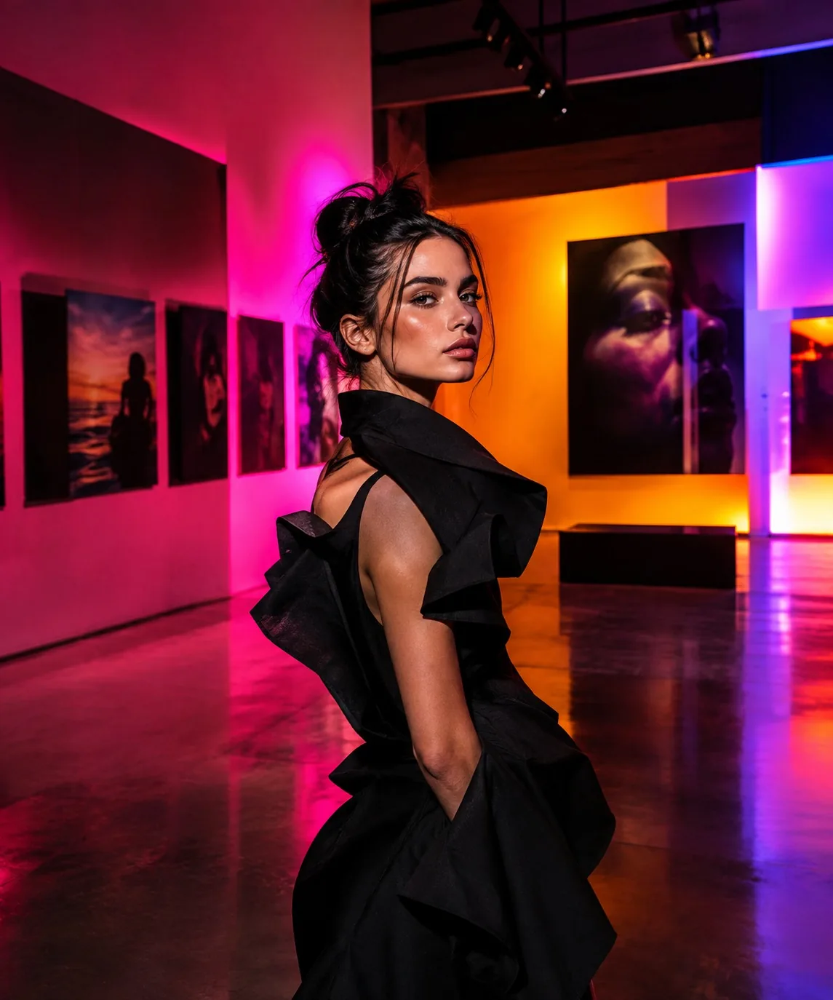
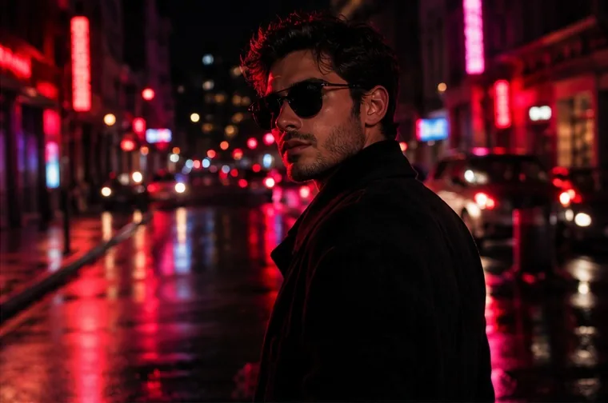
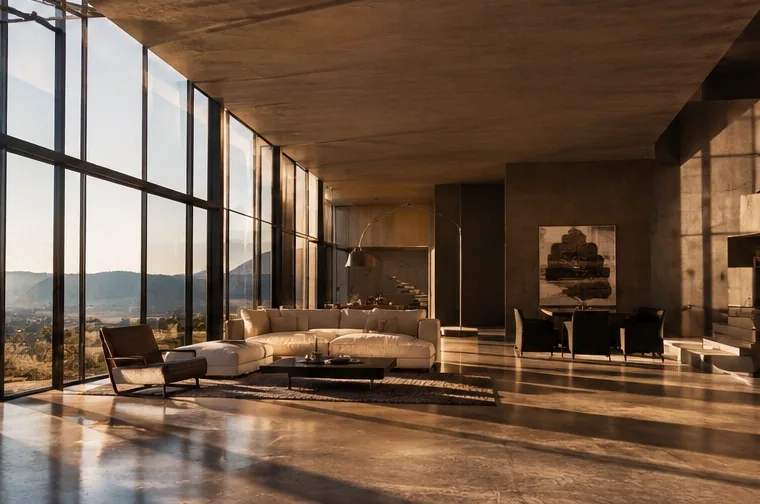
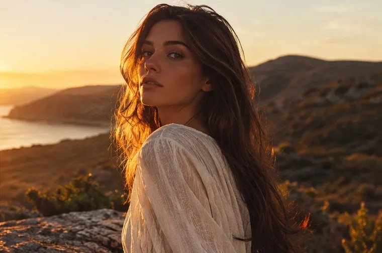

Selected work
Stories in
light.
A selection of fashion, portrait, lifestyle and architectural imagery.




Selected work
A selection of fashion, portrait, lifestyle and architectural imagery.



